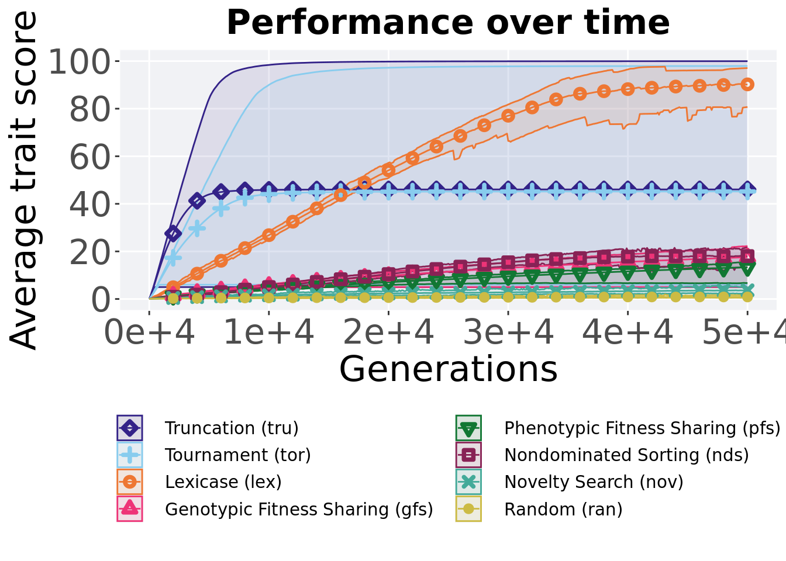
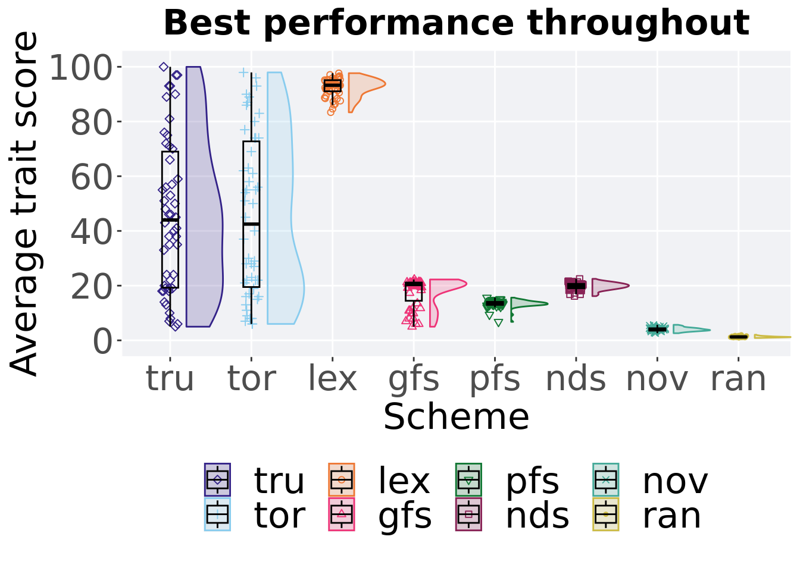
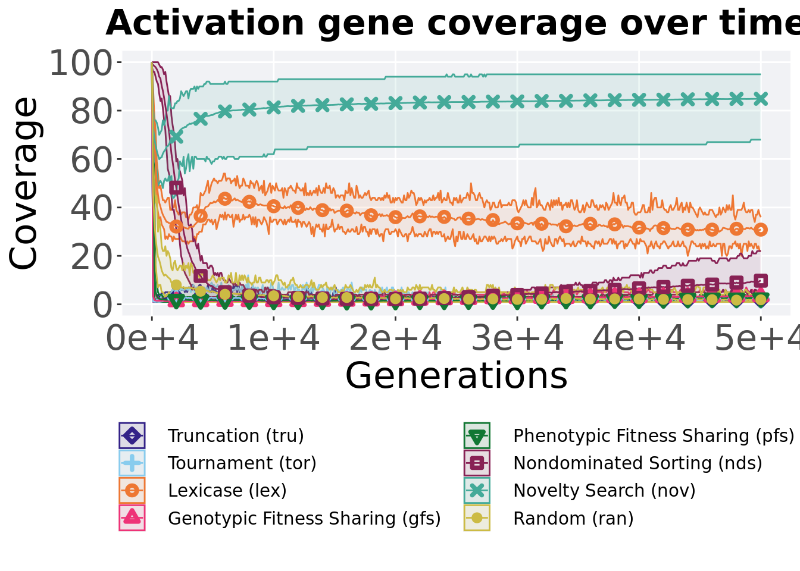
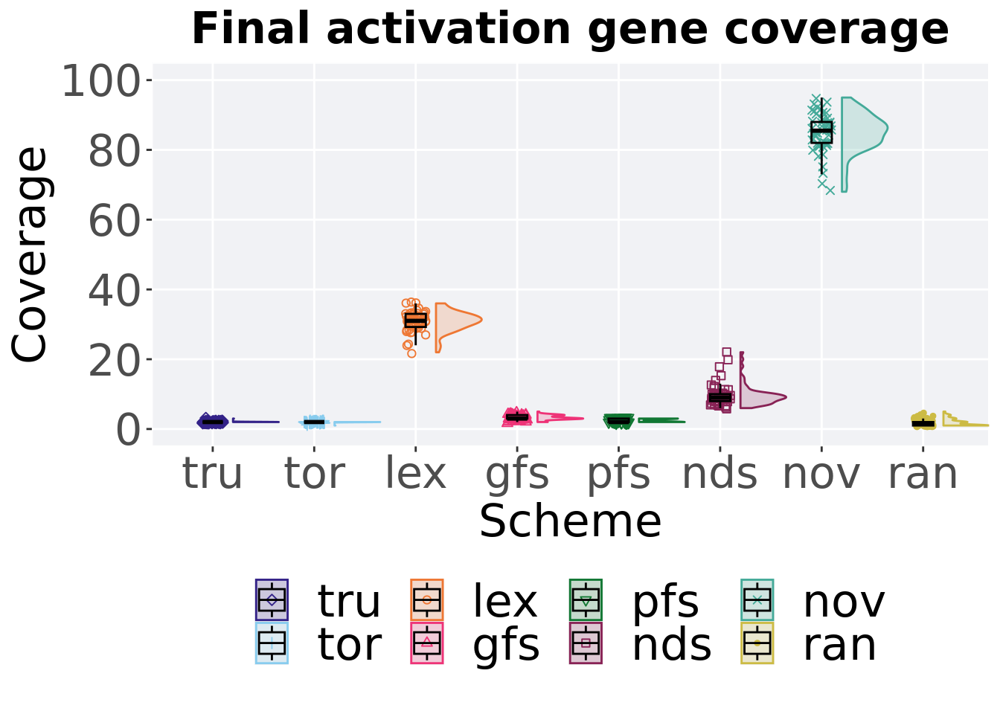

Chapter 5 Multi-path exploration results
Here we present the results for the best performances and activation gene coverage generated by each selection scheme replicate on the contradictory objectives diagnostic. Best performance found refers to the largest average trait score found in a given population. Note that activation gene coverage values are gathered at the population-level. Activation gene coverage refers to the count of unique activation genes in a given population; this gives us a range of integers between 0 and 100.
5.2 Setup
These analyses were conducted in the following computing environment:
## _
## platform x86_64-pc-linux-gnu
## arch x86_64
## os linux-gnu
## system x86_64, linux-gnu
## status Patched
## major 4
## minor 2.2
## year 2022
## month 11
## day 10
## svn rev 83330
## language R
## version.string R version 4.2.2 Patched (2022-11-10 r83330)
## nickname Innocent and Trusting5.3 Performance
Performance analysis.
5.3.1 Over time
Best performance in a population over time.
multipath_exploration = filter(cc_over_time, diagnostic == 'multipath_exploration')
lines = multipath_exploration %>%
group_by(`Selection\nScheme`, gen) %>%
dplyr::summarise(
min = min(pop_fit_max),
mean = mean(pop_fit_max),
max = max(pop_fit_max)
)## `summarise()` has grouped output by 'Selection Scheme'. You can override using
## the `.groups` argument.points = filter(lines, gen %% 2000 == 0 & gen != 0)
ot = ggplot(lines, aes(x=gen, y=mean / TRAITS, group = `Selection\nScheme`, fill =`Selection\nScheme`, color = `Selection\nScheme`, shape = `Selection\nScheme`)) +
geom_ribbon(aes(ymin = min / TRAITS, ymax = max / TRAITS), alpha = 0.1) +
geom_line(size = 0.5) +
geom_point(data = points, size = 1.5, stroke = 2.0, alpha = 1.0) +
scale_y_continuous(
name="Average trait score",
limits=c(-1, 101),
breaks=seq(0,100, 20),
labels=c("0", "20", "40", "60", "80", "100")
) +
scale_x_continuous(
name="Generations",
limits=c(0, 50000),
breaks=c(0, 10000, 20000, 30000, 40000, 50000),
labels=c("0e+6", "1e+6", "2e+6", "3e+6", "4e+6", "5e+6")
) +
scale_shape_manual(values=SHAPE)+
scale_colour_manual(values = cb_palette) +
scale_fill_manual(values = cb_palette) +
ggtitle("Best performance over time") +
p_theme+
guides(
shape=guide_legend(ncol=2, title.position = "bottom"),
color=guide_legend(ncol=2, title.position = "bottom"),
fill=guide_legend(ncol=2, title.position = "bottom")
) +
theme(
legend.position = "bottom",
legend.box="verticle",
legend.justification="center",
legend.title=element_blank()
)
ot
5.3.2 Best performance throughout
Best performance throughout 50,000 generations.
best = filter(cc_best, col == 'pop_fit_max' & diagnostic == 'multipath_exploration')
plot = ggplot(best, aes(x = acron, y = val / TRAITS, color = acron, fill = acron, shape = acron)) +
geom_flat_violin(position = position_nudge(x = .2, y = 0), scale = 'width', alpha = 0.2) +
geom_point(position = position_jitter(width = .1), size = 1.5, alpha = 1.0) +
geom_boxplot(color = 'black', width = .2, outlier.shape = NA, alpha = 0.0) +
scale_y_continuous(
name="Average trait score",
limits=c(-1, 101),
breaks=seq(0,100, 20),
labels=c("0", "20", "40", "60", "80", "100")
) +
scale_x_discrete(
name="Scheme"
)+
scale_shape_manual(values=SHAPE)+
scale_colour_manual(values = cb_palette) +
scale_fill_manual(values = cb_palette) +
p_theme
plot_grid(
plot +
ggtitle("Best performance throughout") +
theme(legend.position="none"),
legend,
nrow=2,
rel_heights = c(2,.55),
label_size = TSIZE
)
5.3.2.1 Stats
Summary statistics for the best performance throughout 50,000 generations.
best$acron <- factor(best$acron, levels = c('lex','tor','tru','nds','gfs','pfs','nov','ran'))
group_by(best, acron) %>%
dplyr::summarise(
count = n(),
na_cnt = sum(is.na(val)),
min = min(val, na.rm = TRUE),
median = median(val, na.rm = TRUE),
mean = mean(val, na.rm = TRUE),
max = max(val, na.rm = TRUE),
IQR = IQR(val, na.rm = TRUE)
)## # A tibble: 8 x 8
## acron count na_cnt min median mean max IQR
## <fct> <int> <int> <dbl> <dbl> <dbl> <dbl> <dbl>
## 1 lex 50 0 8335. 9325. 9251. 9766. 405.
## 2 tor 50 0 600. 4250. 4519. 9794. 5324.
## 3 tru 50 0 500 4400. 4606. 9997. 4974.
## 4 nds 50 0 1617. 1987. 1976. 2248. 159.
## 5 gfs 50 0 499. 2043. 1760. 2224. 669.
## 6 pfs 50 0 676. 1354. 1339. 1561. 110.
## 7 nov 50 0 262. 389. 401. 568. 86.0
## 8 ran 50 0 87.0 125. 128. 204. 28.8Kruskal–Wallis test provides evidence of difference among best performances throughout 50,000 generations.
##
## Kruskal-Wallis rank sum test
##
## data: val by acron
## Kruskal-Wallis chi-squared = 329.88, df = 7, p-value < 2.2e-16Results for post-hoc Wilcoxon rank-sum test with a Bonferroni correction on best performance throughout 50,000 generations.
pairwise.wilcox.test(x = best$val, g = best$acron, p.adjust.method = "bonferroni",
paired = FALSE, conf.int = FALSE, alternative = 'l')##
## Pairwise comparisons using Wilcoxon rank sum test with continuity correction
##
## data: best$val and best$acron
##
## lex tor tru nds gfs pfs nov
## tor 3.0e-13 - - - - - -
## tru 1.1e-11 1.00000 - - - - -
## nds < 2e-16 0.00047 0.00027 - - - -
## gfs < 2e-16 2.3e-05 1.6e-05 1.00000 - - -
## pfs < 2e-16 3.1e-08 6.9e-10 < 2e-16 0.00015 - -
## nov < 2e-16 < 2e-16 < 2e-16 < 2e-16 < 2e-16 < 2e-16 -
## ran < 2e-16 < 2e-16 < 2e-16 < 2e-16 < 2e-16 < 2e-16 < 2e-16
##
## P value adjustment method: bonferroni5.3.3 End of 50,000 generations
Best performance in the population at the end of 50,000 generations.
end = filter(cc_end, diagnostic == 'multipath_exploration')
plot = ggplot(end, aes(x = acron, y = pop_fit_max / TRAITS, color = acron, fill = acron, shape = acron)) +
geom_flat_violin(position = position_nudge(x = .2, y = 0), scale = 'width', alpha = 0.2) +
geom_point(position = position_jitter(width = .1), size = 1.5, alpha = 1.0) +
geom_boxplot(color = 'black', width = .2, outlier.shape = NA, alpha = 0.0) +
scale_y_continuous(
name="Average trait score",
limits=c(-1, 101),
breaks=seq(0,100, 20),
labels=c("0", "20", "40", "60", "80", "100")
) +
scale_x_discrete(
name="Scheme"
)+
scale_shape_manual(values=SHAPE)+
scale_colour_manual(values = cb_palette) +
scale_fill_manual(values = cb_palette) +
p_theme
plot_grid(
plot +
ggtitle("Final performance") +
theme(legend.position="none"),
legend,
nrow=2,
rel_heights = c(2,.55),
label_size = TSIZE
)
5.3.3.1 Stats
Summary statistics for best performance in the population at the end of 50,000 generations.
end$acron <- factor(end$acron, levels = c('lex','tor','tru','nds','gfs','pfs','nov','ran'))
group_by(end, acron) %>%
dplyr::summarise(
count = n(),
na_cnt = sum(is.na(pop_fit_max)),
min = min(pop_fit_max, na.rm = TRUE),
median = median(pop_fit_max, na.rm = TRUE),
mean = mean(pop_fit_max, na.rm = TRUE),
max = max(pop_fit_max, na.rm = TRUE),
IQR = IQR(pop_fit_max, na.rm = TRUE)
)## # A tibble: 8 x 8
## acron count na_cnt min median mean max IQR
## <fct> <int> <int> <dbl> <dbl> <dbl> <dbl> <dbl>
## 1 lex 50 0 8067. 9132. 9022. 9709. 591.
## 2 tor 50 0 600. 4250. 4519. 9794. 5324.
## 3 tru 50 0 500 4400. 4606. 9997. 4974.
## 4 nds 50 0 1337. 1812. 1803. 2161. 165.
## 5 gfs 50 0 496. 2039. 1756. 2224. 668.
## 6 pfs 50 0 667. 1350. 1333. 1560. 104.
## 7 nov 50 0 216. 366. 364. 512. 85.9
## 8 ran 50 0 55.3 78.5 84.0 156. 29.9Kruskal–Wallis test provides evidence of difference among best performance in the population at the end of 50,000 generations.
##
## Kruskal-Wallis rank sum test
##
## data: pop_fit_max by acron
## Kruskal-Wallis chi-squared = 330.05, df = 7, p-value < 2.2e-16Results for post-hoc Wilcoxon rank-sum test with a Bonferroni correction on best performance in the population at the end of 50,000 generations.
pairwise.wilcox.test(x = end$pop_fit_max, g = end$acron, p.adjust.method = "bonferroni",
paired = FALSE, conf.int = FALSE, alternative = 'l')##
## Pairwise comparisons using Wilcoxon rank sum test with continuity correction
##
## data: end$pop_fit_max and end$acron
##
## lex tor tru nds gfs pfs nov
## tor 3.9e-12 - - - - - -
## tru 7.1e-11 1.00000 - - - - -
## nds < 2e-16 8.2e-05 9.3e-07 - - - -
## gfs < 2e-16 2.2e-05 1.6e-05 1.00000 - - -
## pfs < 2e-16 3.0e-08 6.6e-10 3.0e-15 0.00015 - -
## nov < 2e-16 < 2e-16 < 2e-16 < 2e-16 < 2e-16 < 2e-16 -
## ran < 2e-16 < 2e-16 < 2e-16 < 2e-16 < 2e-16 < 2e-16 < 2e-16
##
## P value adjustment method: bonferroni5.4 Activation gene coverage
Activation gene coverage analysis.
5.4.1 Over time coverage
Activation gene coverage over time.
multipath_exploration = filter(cc_over_time, diagnostic == 'multipath_exploration')
lines = multipath_exploration %>%
group_by(`Selection\nScheme`, gen) %>%
dplyr::summarise(
min = min(uni_str_pos),
mean = mean(uni_str_pos),
max = max(uni_str_pos)
)## `summarise()` has grouped output by 'Selection Scheme'. You can override using
## the `.groups` argument.points = filter(lines, gen %% 2000 == 0 & gen != 0)
ot = ggplot(lines, aes(x=gen, y=mean, group = `Selection\nScheme`, fill =`Selection\nScheme`, color = `Selection\nScheme`, shape = `Selection\nScheme`)) +
geom_ribbon(aes(ymin = min, ymax = max), alpha = 0.1) +
geom_line(size = 0.5) +
geom_point(data = points, size = 1.5, stroke = 2.0, alpha = 1.0) +
scale_y_continuous(
name="Coverage",
limits=c(-1, 101),
breaks=seq(0,100, 20),
labels=c("0", "20", "40", "60", "80", "100")
) +
scale_x_continuous(
name="Generations",
limits=c(0, 50000),
breaks=c(0, 10000, 20000, 30000, 40000, 50000),
labels=c("0e+6", "1e+6", "2e+6", "3e+6", "4e+6", "5e+6")
) +
scale_shape_manual(values=SHAPE)+
scale_colour_manual(values = cb_palette) +
scale_fill_manual(values = cb_palette) +
ggtitle("Activation gene coverage over time") +
p_theme+
guides(
shape=guide_legend(ncol=2, title.position = "bottom"),
color=guide_legend(ncol=2, title.position = "bottom"),
fill=guide_legend(ncol=2, title.position = "bottom")
) +
theme(
legend.position = "bottom",
legend.box="verticle",
legend.justification="center",
legend.title=element_blank()
)
ot
5.4.2 End of 50,000 generations
Activation gene coverage in the population at the end of 50,000 generations.
end = filter(cc_end, diagnostic == 'multipath_exploration')
best = ggplot(end, aes(x = acron, y = uni_str_pos, color = acron, fill = acron, shape = acron)) +
geom_flat_violin(position = position_nudge(x = .2, y = 0), scale = 'width', alpha = 0.2) +
geom_point(position = position_jitter(width = .1), size = 1.5, alpha = 1.0) +
geom_boxplot(color = 'black', width = .2, outlier.shape = NA, alpha = 0.0) +
scale_y_continuous(
name="Coverage",
limits=c(-1, 101),
breaks=seq(0,100, 20),
labels=c("0", "20", "40", "60", "80", "100")
) +
scale_x_discrete(
name="Scheme"
)+
scale_shape_manual(values=SHAPE)+
scale_colour_manual(values = cb_palette) +
scale_fill_manual(values = cb_palette) +
p_theme
plot_grid(
best +
ggtitle("Final activation gene coverage") +
theme(legend.position="none"),
legend,
nrow=2,
rel_heights = c(2,.55),
label_size = TSIZE
)
5.4.2.1 Stats
Summary statistics for activation gene coverage in the population at the end of 50,000 generations.
end$acron <- factor(end$acron, levels = c('nov','lex','nds','gfs','pfs','tor','tru','ran'))
group_by(end, acron) %>%
dplyr::summarise(
count = n(),
na_cnt = sum(is.na(uni_str_pos)),
min = min(uni_str_pos, na.rm = TRUE),
median = median(uni_str_pos, na.rm = TRUE),
mean = mean(uni_str_pos, na.rm = TRUE),
max = max(uni_str_pos, na.rm = TRUE),
IQR = IQR(uni_str_pos, na.rm = TRUE)
)## # A tibble: 8 x 8
## acron count na_cnt min median mean max IQR
## <fct> <int> <int> <int> <dbl> <dbl> <int> <dbl>
## 1 nov 50 0 68 85.5 84.9 95 6
## 2 lex 50 0 22 31 30.8 36 3.75
## 3 nds 50 0 6 9 9.76 22 2
## 4 gfs 50 0 2 3 3.24 5 1
## 5 pfs 50 0 2 2 2.46 3 1
## 6 tor 50 0 1 2 1.98 2 0
## 7 tru 50 0 2 2 2.02 3 0
## 8 ran 50 0 1 1.5 1.86 5 1Kruskal–Wallis test provides evidence of difference among activation gene coverage in the population at the end of 50,000 generations.
##
## Kruskal-Wallis rank sum test
##
## data: uni_str_pos by acron
## Kruskal-Wallis chi-squared = 351.29, df = 7, p-value < 2.2e-16Results for post-hoc Wilcoxon rank-sum test with a Bonferroni correction on activation gene coverage in the population at the end of 50,000 generations.
pairwise.wilcox.test(x = end$uni_str_pos, g = end$acron, p.adjust.method = "bonferroni",
paired = FALSE, conf.int = FALSE, alternative = 'l')##
## Pairwise comparisons using Wilcoxon rank sum test with continuity correction
##
## data: end$uni_str_pos and end$acron
##
## nov lex nds gfs pfs tor tru
## lex < 2e-16 - - - - - -
## nds < 2e-16 < 2e-16 - - - - -
## gfs < 2e-16 < 2e-16 < 2e-16 - - - -
## pfs < 2e-16 < 2e-16 < 2e-16 7.8e-07 - - -
## tor < 2e-16 < 2e-16 < 2e-16 4.2e-16 6.3e-07 - -
## tru < 2e-16 < 2e-16 < 2e-16 1.4e-15 4.3e-06 1.00000 -
## ran < 2e-16 < 2e-16 < 2e-16 1.1e-08 0.00073 0.20446 0.10598
##
## P value adjustment method: bonferroni